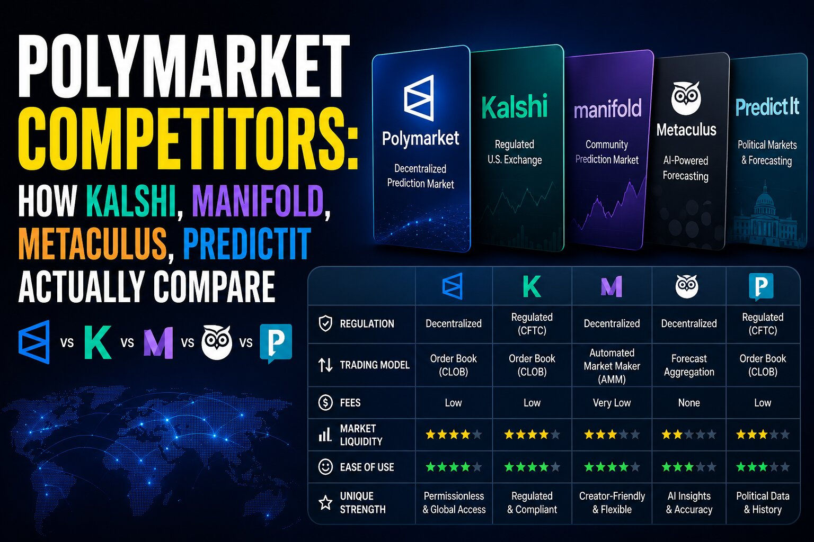

Polymarket Competitors: How Kalshi, Manifold, and the Rest Actually Compare

The short answer
Polymarket is the largest prediction market by trading volume, but it isn't the only one, and it isn't the best fit for every user. Kalshi is the closest head-to-head competitor and the one most directly regulated by the CFTC. Beyond that, the field splits by purpose: Manifold runs on play money and community reputation, PredictIt sticks to a narrow slate of political contracts under a regulatory no-action letter, and Metaculus focuses on forecasting quality over trading at all. Which one actually makes sense depends on whether you want to trade real money, want US-regulated access, or just want the sharpest read on an outcome.
Quick comparison
| Platform | Money type | Regulation | Settlement | Market variety | Best for |
|---|---|---|---|---|---|
| Polymarket (global) | Real money | Crypto-native, outside US CFTC oversight | USDC on Polygon | Widest — global events, niche and long-tail markets | Broad, fast-moving coverage; crypto-native traders |
| Polymarket US | Real money | CFTC-regulated (QCX LLC) | USD via bank rails | Subset of global markets, US-eligible only | KYC-verified US users who want Polymarket without crypto |
| Kalshi | Real money | CFTC-regulated exchange | USD via bank rails | Deep on mainstream US sports, politics, economics | US traders wanting tight pricing on major leagues |
| Manifold | Play money | Unregulated (no real-money stakes) | N/A | Anything a user creates — very long-tail | Low-stakes forecasting, offbeat or niche questions |
| PredictIt | Real money, capped per market | Operates under a research-focused no-action framework | USD | Narrow — mostly US political contracts | Dedicated political-outcome traders |
| Metaculus | None — no trading | N/A | N/A | Broad, forecasting-question format | Checking calibrated odds without taking a position |
Comparison reflects publicly available platform terms as of July 2026 — eligibility, regulation, and fees vary by jurisdiction and change over time, so confirm current details directly on each platform before trading.
Kalshi: the regulated head-to-head rival
Kalshi is a CFTC-regulated exchange that settles directly in US dollars through standard bank rails, with no crypto conversion step required. It has built out significant depth in sports contracts alongside its original political and economic markets, and generally spreads liquidity across a larger number of match-level contracts, which tends to produce tighter pricing on mainstream US leagues like the NFL, NBA, and MLB. Where Polymarket concentrates liquidity into fewer, larger tournament-scale markets, Kalshi's structure suits traders who want steady pricing on well-covered categories over the breadth of niche, fast-moving global events Polymarket tends to list. For years Kalshi was the default choice for US residents specifically because Polymarket's global platform wasn't available to them — that gap has narrowed since Polymarket US launched, but Kalshi remains the more traditional, exchange-style entry point.
Polymarket US: not really a separate competitor, but worth knowing about
Polymarket now runs two distinct products: the original global, crypto-native platform, and Polymarket US, a CFTC-regulated arm built for KYC-verified American users that settles in dollars rather than USDC. It's less a competitor than a parallel on-ramp, but it matters for comparison purposes because it directly narrows the gap with Kalshi on the one dimension — US regulatory access — where Kalshi previously had a clear edge. Anyone comparing the two platforms now needs to check which version of Polymarket they're actually looking at, since the global and US products differ in eligibility, settlement, and available markets.
Manifold: play money and community-driven questions
Manifold uses play money rather than real currency, which removes the regulatory friction that limits Polymarket and Kalshi in some jurisdictions but also removes the financial stakes that drive sharp pricing. Its strength is breadth and speed of question creation — users can spin up a market on almost anything, including narrow or offbeat questions no regulated exchange would list — which makes it a reasonable complement to real-money platforms for topics too niche or fast-moving to have a liquid Polymarket or Kalshi contract yet.
PredictIt: the political specialist with a narrow scope
PredictIt operates under a research-focused no-action framework limited mostly to political contracts, with caps on how much any one user can invest per market. It doesn't compete with Polymarket on breadth or liquidity, but its long operating history and its specific focus on elections and political outcomes still draw dedicated activity from traders who follow that space closely, even as prediction-market volume overall has shifted toward sports.
Metaculus: forecasting quality over trading
Metaculus isn't a trading platform at all — there's no money changing hands and no shares to buy or sell. It's a forecasting community scored on prediction accuracy over time, which makes it useful as a sanity check against Polymarket or Kalshi pricing rather than a place to take a position. When a market price and Metaculus's community forecast diverge sharply, that gap itself is often worth paying attention to.
Analytics layers built on top, not competitors to the markets themselves
A newer category of tools doesn't run its own markets at all — it sits on top of Polymarket and similar platforms as an intelligence layer, tracking whale wallets, large position moves, and where volume is concentrating in real time. These tools are worth knowing about if you trade actively on Polymarket, but they aren't alternatives to it; they're closer to a research aid layered on the same order books.
How to actually pick between them
If US regulatory clarity and dollar settlement matter most, Kalshi or Polymarket US are the straightforward choices. If breadth of niche and fast-moving global events matters more than regulatory tidiness, Polymarket's global platform still has the deepest liquidity and widest market variety. If you want to test a forecasting instinct without financial risk, Manifold is the low-stakes option. If your interest is specifically political outcomes and you're comfortable with position caps, PredictIt still has a dedicated user base. And if you just want the most calibrated probability estimate available and don't need to trade at all, Metaculus is the one built for that.
Disclaimer: This post is for informational purposes only and is not financial, legal, or tax advice. Prediction markets involve risk of loss, and eligibility, regulation, and available markets vary by platform and jurisdiction and can change. Confirm current terms, fees, and legal access directly on each platform before trading.